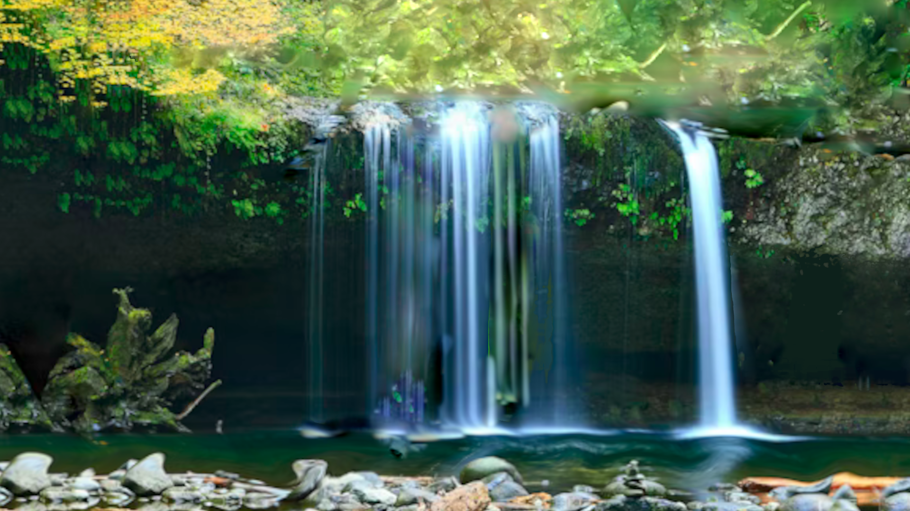

PROJECT 01
Landscape
This project was made to show viewers photos of landscapes that I have taken, seen, or created.
About this project
These images are available for phone, tablet, and desktop wallpaper.
What I built
Waterfall Photography
